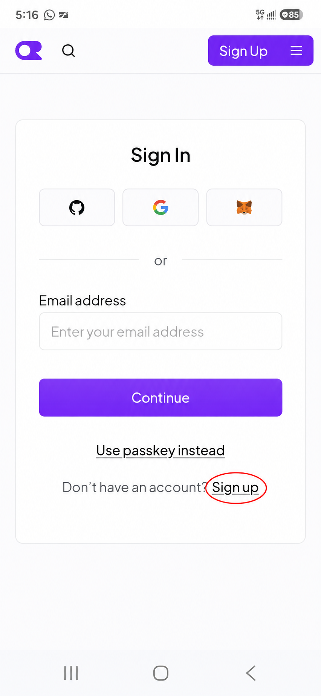
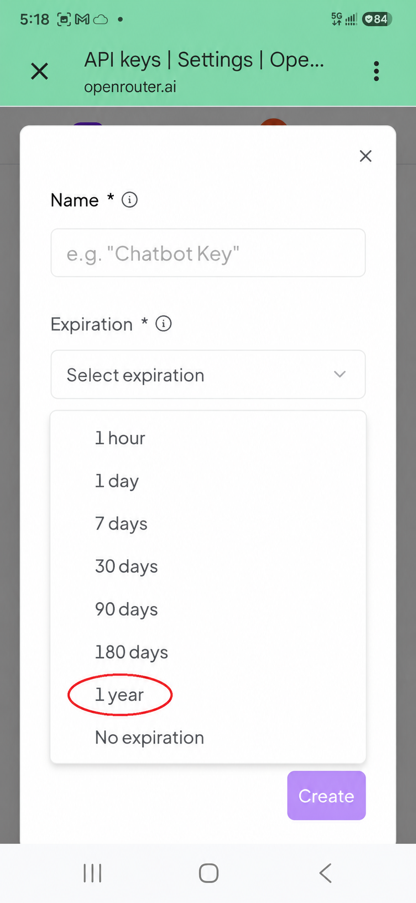
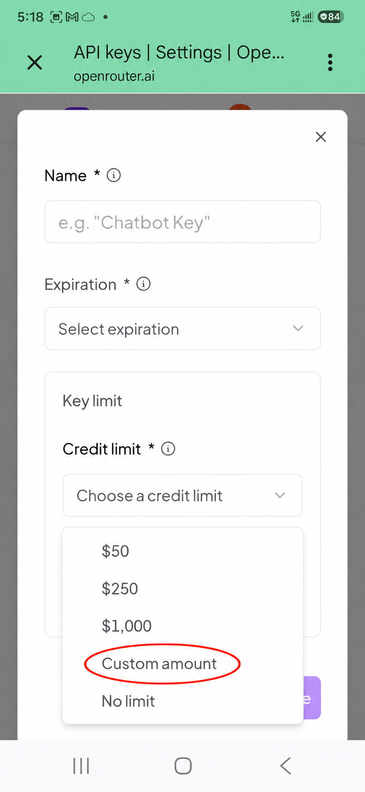
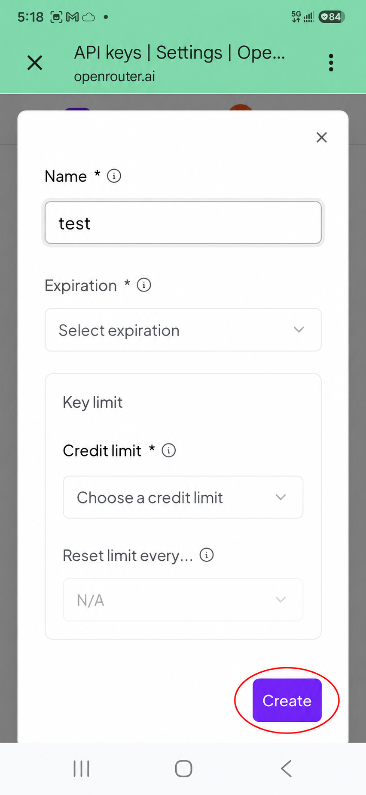
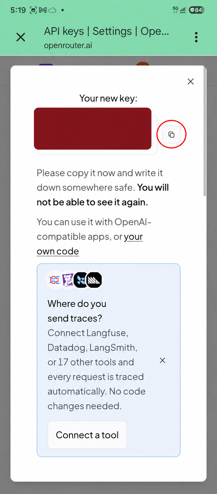
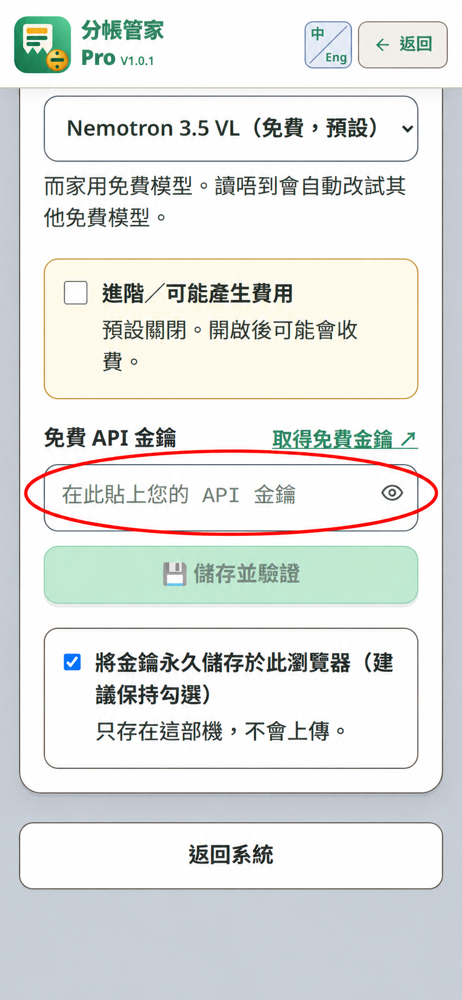

OpenRouter key，簡單設定Set up your OpenRouter key
通常設定一次就夠；同一瀏覽器記住後，影每張單都唔使重貼。
Usually a one-time setup. Once remembered in this browser, you need not paste it for every receipt.
登入或註冊Sign in or sign up
已有帳戶就登入；未有帳戶就按圖中圈住的 Sign Up。從 OpenRouter 官方 Keys 頁開始。
Sign in if you have an account; otherwise tap the circled Sign Up. Start at the official OpenRouter Keys page.

開 Keys，按 New keyOpen Keys and tap New key
登入後到 API keys 頁，按圈住的 New key。
After signing in, open the API keys page and tap the circled New key.

選到期日Choose an expiry
揀你需要的期限；圖中以 1 year 作例子。除非有意，避免 No expiration。
Choose a term that suits you; this example marks 1 year. Avoid No expiration unless you intend it.

設定額度上限Set a credit limit
揀自己能接受的上限；想自訂就按圈住的 Custom amount。除非你有意，避免 No limit。
Choose a limit you are comfortable with. Tap Custom amount to set your own; avoid No limit unless intended.

填名稱，再按 CreateName it, then tap Create
填個容易認的名稱，確認到期日和額度後按 Create。圖中只標出按鈕；「test」只是示例名稱。
Enter a name, confirm your expiry and limit, then tap Create. The screenshot marks only the button; “test” is just a sample name.

即時複製，妥善保管Copy it and keep it private
按圈住的複製掣。Key 通常只顯示一次，唔好分享或截圖。
Tap the circled Copy button. The key is usually shown only once; do not share or screenshot it.

只把 key 貼入自己信任的裝置；不要放到聊天、公開 repo 或圖片。Paste the key only on a device you trust. Never put it in chat, a public repo, or an image.
貼入 App，完成一次設定Paste it into the app
貼入圈住的「免費 API 金鑰」，按「儲存並驗證」。同一瀏覽器保持「永久儲存」勾選，通常每張單都唔使再貼。
Paste into the circled Free API key field and tap Save & Verify. Leave “Remember” checked in this browser, and you usually will not need to paste it again for each receipt.

「儲存並驗證」會檢查格式並保存於本機；要試連線另按「測試連線」。照片讀單會向 OpenRouter 發出請求並使用這條 key。“Save & Verify” checks the format and saves it locally. Use “Test connection” separately. Photo scanning sends a request to OpenRouter using this key.
圖像來源：你提供的 OpenRouter 手機截圖；貼上頁使用目前 App 的空白設定畫面。紅圈只標示截圖中實際可見的控制，畫面以外的流程只用文字說明。
Images: your OpenRouter phone screenshots and the current app’s empty Settings screen. Circles mark only visible controls; steps outside the frame are described in text.